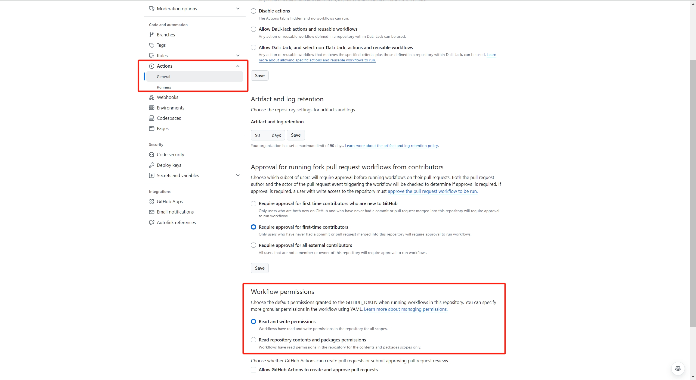
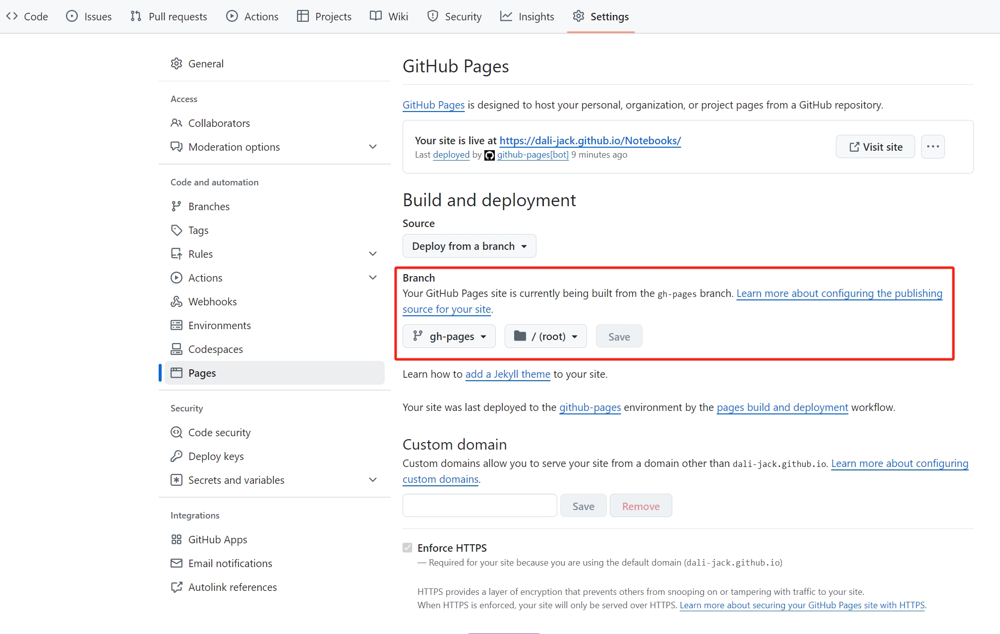

mkdocs
install
pip install mkdocs-material
setup
Init a workspace:
mkdocs new .
Then add your markdowns to docs. Folder structure will be preserved in the navigation.
configuration
edit mkdocs.yml, an example:
site_name: DaLi's notebooks
theme:
logo: _assets/icon.png
favicon: _assets/icon.png
name: material
palette:
primary: brown
accent: lime
features:
- navigation.instant
- navigation.tracking
- navigation.top
- header.autohide
- search.suggest
- search.highlight
- search.share
repo_url: https://github.com/DaLi-Jack/Notebooks
plugins:
- search
markdown_extensions:
- tables
- pymdownx.betterem
- pymdownx.arithmatex:
generic: true
- pymdownx.highlight
- pymdownx.inlinehilite
- pymdownx.keys
- pymdownx.superfences
- pymdownx.tabbed:
alternate_style: true
- mdx_truly_sane_lists # fix typora 2 space indentation, ref: https://github.com/mkdocs/mkdocs/issues/545
extra_javascript:
- _js/mathjax.js
- https://polyfill.io/v3/polyfill.min.js?features=es6
- https://cdn.jsdelivr.net/npm/mathjax@3/es5/tex-mml-chtml.js
The inline math plugin needs an extra file at docs/_js/mathjax.js:
window.MathJax = {
tex: {
inlineMath: [["\\(", "\\)"]],
displayMath: [["\\[", "\\]"]],
processEscapes: true,
processEnvironments: true
},
options: {
ignoreHtmlClass: ".*|",
processHtmlClass: "arithmatex"
}
};
document$.subscribe(() => {
MathJax.typesetPromise()
})
Note that the default mathjax's line breaking can be hard to use, we can use a script to post-process the markdowns following typora's setting:
import os
import re
import glob
files = glob.glob('docs/**/*.md', recursive=True)
# fix math blocks to be correctly rendered by mathjax:
# 1. $$..$$ will always be preceded and followed by an empty line, and there is no blank line inside.
# 2. always wrap all content within \displaylines{}
for file in files:
with open(file, 'r') as f:
lines = f.readlines()
# naive matching $$...$$
outside = True
modified = False
for i, line in enumerate(lines):
if re.match('^\$\$', line) is not None:
if outside:
if lines[i+1] != '\displaylines{\n':
lines[i] = '\n$$\n\displaylines{\n'
modified = True
outside = False
else:
if lines[i-1] != '}\n':
lines[i] = '}\n$$\n\n'
modified = True
outside = True
# remove blank lines inside
if not outside and re.match('^\s*\n$', line):
lines[i] = ''
modified = True
# remove excessive blank lines
cnt = 0
for i, line in enumerate(lines):
if re.match('^\s*\n$', line):
cnt += 1
if cnt >= 3:
lines[i] = ''
modified = True
else:
cnt = 0
if modified:
lines = [line for line in lines if line != '']
if not outside:
print(f'[WARN] {file} unmatched $$, no modification is done.')
else:
if modified:
with open(file, 'w') as f:
f.writelines(lines)
print(f'[INFO] {file} fixed.')
serve
At the root of workspace:
mkdocs serve
by default it serves at localhost:8000
deploy
Use github workflows to automatically deploy to github pages:
Create file at .github/workflows/ci.yml:
name: ci
on:
push:
branches:
- master # or main
jobs:
deploy:
runs-on: ubuntu-latest
steps:
- uses: actions/checkout@v2
- uses: actions/setup-python@v2
with:
python-version: 3.x
- run: pip install mkdocs-material
- run: pip install mdx-truly-sane-lists
- run: mkdocs gh-deploy --force
It is invoked at each push to master branch.
Remember to enable Workflow permission.

Use gh-deploy branch
